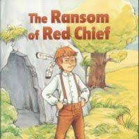

by O. HENRY
Location: Summit, Alabama
Time: Early 1900s

- It seemed like a good idea. It was not.
- I was with Bill Driscoll. We were in Alabama.
- We thought about kidnapping.
- Later, Bill said it was a mistake.
- We didn't find out how big a mistake until later.
- There was a town down in Alabama.
- The town was called Summit.
- Summit was as flat as a pancake.
- The people living in Summit were harmless. They stayed to themselves.
- Bill and me had about 600 dollars.
- We needed just 2,000 dollars more.
- We planned a phony real estate deal in Western Illinois.
- Bill and I talked about kidnapping on the front steps of our hotel.
- Family ties are strong in rural towns.
- Small newspapers would not send reporters to look into a kidnapping.
- Summit was a small town.
- Summit did not have a large police department.
- Summit had nothing stronger than constables.
- Summit might have some lazy bloodhounds.
- The local newspaper might write a little story.
- We had to decide on a person to kidnap.
- We decided the victim would be a child of a well-known (prominent) citizen.
- We would kidnap the only child of Ebenezer Dorset.
- The father was respectable.
- Ebenezer Dorset was a mortgage lender.
- Dorset went to church. He foreclosed on property.
- The kid was a freckle-faced boy of ten. He had bright red hair.
- Bill and me figured Ebenezer would pay a ransom of 2,000 dollars.
- But wait till I tell you.
- We found a cave in a mountain. The cave was 2 miles from Summit.
- We stored supplies (provisions) in the cave.
- We picked an evening for the kidnapping.
- We drove in a buggy past old Dorset's house.
- The kid was in the street.
- He was throwing rocks at a kitten.
- (page 1)
- "Hey, little boy!" says Bill, "would you like to have a bag of candy and
- a nice ride?"
- The boy hit Bill neatly in the eye with a piece of brick.
- "That will cost the old man an extra 500 dollars," says Bill,
- That boy put up a fight like a welterweight.
- Finally, we got him into the buggy and drove away.
- We took him up to the cave.
- I drove the buggy back to the little village, three miles away.
- We rented the buggy there.
- It was dark.
- I walked back to the mountain.
- Bill was plastering cream over scratches and bruises on his body.
- There was a fire burning in front of the cave.
- The boy was watching a pot of boiling coffee.
- He had two buzzard tail feathers in his red hair.
- The boy pointed a stick at me when I came to the cave.
- The boy says:
- "Ha! Cursed paleface, do you dare to enter the camp of Red Chief, the terror of
- the plains?"
- "He's all right now," says Bill.
- Bill started rolling up his trousers. He had new bruises on his shins.
- Bill says, "We're playing Indian.
- We're making Buffalo Bill's show look like a cheap magic show.
- I'm Old Hank, the Trapper, Red Chief's captive.
- Geronimo is going to scalp me in the morning.
- That kid can kick hard."
- The boy was having fun camping out in a cave.
- Camping made him forget that he was a captive himself.
- He immediately named me "Snake- eye, the Spy".
- The boy said, I would be broiled at the stake at sunrise.
- He was waiting for his scouts to return.
- Then we had supper.
- The boy filled his mouth full of bacon and bread and gravy.
- He began to talk.
- He made a during- dinner speech that made no sense…
- The boy just kept talking…something like this:
- (page 2)
- "I like this fine. I never camped out before.
- I had a pet 'possum once, and I was 9 last birthday.
- I hate to go to school.
- Rats ate up 16 of Jimmy Talbot's aunt's speckled hen's eggs.
- Are there any real Indians in these woods?
- I want some more gravy.
- Does the trees moving make the wind blow?
- We had 5 puppies.
- What makes your nose so red, Hank?
- My father has lots of money.
- Are the stars hot?
- I whipped Ed Walker twice, Saturday.
- I don't like girls.
- You dassent catch toads unless with a string.
- Do oxen make any noise?
- Why are oranges round?
- Have you got beds to sleep on in this Cave?
- Amos Murray has got six toes.
- A parrot can talk, but a monkey or a fish can't.
- How many does it take to make 12?"
- The boy would remember that he was an Indian.
- He would pick up a stick for a rifle.
- The boy would tiptoe to the front of the cave.
- He was waiting for his scouts to return.
- Now and then he would let out a war-whoop.
- The sound made Old Hank the Trapper shake (shiver).
- That boy had Bill scared from the start.
- "Red Chief," says I to the kid, "would you like to go home?"
- "Aw, what for?" says he.
- "I don't have any fun at home. I hate to go to school.
- I like to camp out.
- You won't take me back home again, Snake-eye, will you?"
- "Not right away," says I.
- "We'll stay here in the cave awhile."
- "All right!" the boy said.
- "That'll be fine. I never had such fun in all my life."
- We went to bed about eleven o'clock.
- We spread down some wide blankets and quilts.
- We put Red Chief between us.
- We weren't afraid he'd run away.
- He kept us awake for three hours.
- The boy kept jumping up and reaching for his rifle.
- He screamed, "Hist! pard," in mine and Bill's ears.
- At last, I fell into a troubled sleep.
- I dreamed that I had been kidnapped.
- In my dream, I was chained to a tree by a ferocious pirate with red hair.
- (page 3)
- I was awakened by a series of awful screams from Bill.
- They weren't manly yells, or howls, or shouts, or whoops, or yawps.
- They were indecent, terrifying, humiliating screams, such as women makes.
- It's an awful thing to hear.
- Bill was a strong, desperate, fat man.
- He screamed, uncontrollably in a cave at daybreak.
- I jumped up to see what the matter was.
- Red Chief was sitting on Bill's chest.
- The boy had one hand twined in Bill's hair.
- In the other he had the sharp jackknife we used for slicing bacon.
- The boy was realistically trying to take Bill's scalp.
- That was the punishment he was told to expect the evening before.
- I got the knife away from the kid. I made him lie down again.
- But, from that moment, Bill's spirit was broken.
- Bill laid down on his side of the bed.
- He never closed an eye again in sleep as long as that boy was with us.
- I did doze off for a while.
- I woke up suddenly as the sun came up.
- Red Chief had said I was to be burned at the stake at sunrise.
- I wasn't nervous or afraid; but I sat up and lit my pipe and leaned against a
- rock.
- "What you getting up so soon for, Sam?" asked Bill.
- "Me?" says I.
- "Oh, I got a kind of pain in my shoulder. I thought sitting up would rest it."
- "You're a liar!" says Bill.
- "You're afraid.
- You was to be burned at sunrise, and you was afraid he'd do it.
- And he would, too, if he could find a match.
- Ain't it awful, Sam? Do you think anybody will pay our ransom?
- Who would want to get a little imp like that back home?"
- "Sure," said I.
- "A rowdy kid like that is just the kind that parents dote on.
- Now, you and the Chief get up and cook breakfast.
- I will go up on the top of this mountain and look around (reconnoiter).
- (page 4)
- I went up on the peak of the little mountain.
- I looked over toward Summit.
- I expected to see the townsfolks looking for the kidnapers.
- But what I saw was a peaceful landscape.
- I saw one man plowing with a mule.
- Nobody was dragging the creek;
- no one dashed around (hither and yon), bringing bad news to the parents.
- There was an attitude of sleepiness
- "Maybe," says I to myself, "they have not found out that the boy is missing.
- They don't know the 'wolves' have taken the 'tender lamb' from the fold.
- Heaven help the wolves!" says I.
- I went down the mountain to breakfast.
- I got to the cave.
- I found Bill backed up against the side of the cave.
- Bill was breathing hard.
- The boy threatened to smash him with a rock.
- The rock was half as big as a coconut.
- "He put a red-hot boiled potato down my back," explained Bill.
- "and then mashed it with his foot.
- I boxed that boy's ears.
- Have you got a gun about you, Sam?"
- I took the rock away from the boy.
- I patched up the argument.
- "I'll fix you," says the kid to Bill.
- "No man ever hit the Red Chief.
- You better beware!"
- We ate breakfast.
- The kid takes something out of his pocket.
- It is a piece of leather with strings wrapped around.
- The kid goes outside the cave unwinding it.
- "What's he up to now?" says Bill, anxiously.
- "You don't think he'll run away, do you, Sam?"
- "No fear of it," says I.
- "He don't seem to be much of a homebody.
- But we've got to fix up some plan about the ransom.
- There don't seem to be much excitement around Summit
- Maybe they don't know he's gone.
- His folks may think he's spending the night with Aunt Jane or a neighbor.
- Anyhow, he'll be missed today.
- We will send a message to his father tonight.
- We will demand 2,000 dollars for the boy's return."
- We heard a kind of war-whoop.
- David might have made that noise when he knocked out the Goliath.
- It was a sling.
- Red Chief had pulled it out of his pocket.
- He was whirling it around his head.
- page 5
- I dodged.
- I heard a heavy thud and sigh from Bill.
- The rock was the size of an egg.
- The rock hit Bill just behind his left ear.
- Bill fell in the fire across the frying pan of hot water.
- I dragged Bill out. I poured cold water on his head for half an hour.
- Soon, Bill sits up. He felt behind his ear.
- Bill says, "Sam, do you know who my favorite Biblical character is?"
- "Take it easy," says I. "You'll come to your senses presently."
- "King Herod," says he.
- "You won't go away and leave me here alone, will you, Sam?"
- I went out and caught that boy.
- I shook him until his freckles rattled.
- "If you don't behave," says I, "I'll take you straight home.
- Now, are you going to be good, or not?"
- "I was only funning," the boy says.
- "I didn't mean to hurt Old Hank. But what did he hit me for?
- I'll behave, Snake- eye, if you won't send me home.
- Let me play the Black Scout today?"
- "I don't know the game," says I.
- "That's for you and Mr. Bill to decide.
- He's your playmate for the day.
- I'm going away for a while, on business.
- Now, you come in and make friends with him.
- Say you are sorry for hurting him, or home you go."
- I made him and Bill shake hands.
- I took Bill aside. I told him I was going to Poplar Grove.
- Poplar Grove is a little village. It is three miles from the cave.
- I needed to find out if people in Summit knew about the kidnapping.
- I also thought we had to send a letter to Ebenezer Dorset that day.
- I would demand the ransom.
- I would tell Dorset how the money should be paid.
- "You know, Sam," says Bill,
- "I've stood by you without batting an eye in earthquakes, fire, and flood—
- in poker games, dynamite outrages, police raids, train robberies, and cyclones.
- I never lost my nerve yet till we kidnapped that two-legged skyrocket of a kid.
- He's got me going. You won't leave me long with him, will you, Sam?"
- "I'll be back sometime this afternoon," says I.
- "You must keep the boy amused and quiet till I get back.
- And now we'll write the letter to old Dorset."
- (page 6)
- Bill and I got paper and pencil.
- We worked on the letter.
- Red Chief strutted up and down guarding the mouth of the cave.
- He was wrapped in a blanket.
- Bill begged to make the ransom 1,500 dollars instead of 2,000 dollars.
- He had tears in his eyes.
- "I ain't attempting," says he, "to deny strength of parental affection.
- but we're dealing with humans.
- No human is going to pay 2,000 dollars for that 40-pound chunk of wild cat.
- I'm willing to take a chance at 1,500 dollars.
- You can charge the difference to me."
- So, Bill, and I wrote a letter that ran this way:
- EBENEZER DORSET, ESQ.:
- We have your boy hidden in a place far from Summit.
- It is useless for you or the police to try to find him.
- The only terms on which you can have him restored to you are these:
- We demand 1,500 dollars in large bills for his return.
- Leave the money at midnight tonight
- Leave it at the same spot and in the box as your reply to this note.
- -- hereinafter described.
- If you agree to these terms, send your answer in writing tonight.
- Send one messenger at 8:30 tonight.
- Send the messenger to: Cross Owl Creek on the road to Poplar Grove.
- You will see 3 large trees about 100 yards apart
- They are close to the fence near the wheat field on the right.
- There will be a small cardboard (pasteboard) box.
- It will be the bottom of the fencepost, across from the third tree.
- The messenger will put the answer in the box.
- The messenger will return to Summit.
- Don't try any tricks and meet our demands...
- ...or you will never see your boy again.
- Pay the money as demanded.
- He will be returned to you safe in 3 hours.
- These terms are final.
- If you do not meet the terms, that is it.
- There will be no more discussion.
- --TWO DESPERATE MEN
- I addressed this letter to Dorset.
- I put the letter in my pocket.
- I was about to head to the post office.
- The kid comes up to me and says:
- "Snake-eye, you said I could play the Black Scout while you was gone."
- (page 7)
- "Play it, of course," says I.
- "Mr. Bill will play with you.
- What kind of a game is it?"
- I'm the Black Scout," says Red Chief.
- I have to ride to the stockade.
- I have to warn the settlers that the Indians are coming.
- I'm tired of playing the Indian myself.
- I want to be the Black Scout."
- "All right," says I.
- "It sounds harmless to me.
- I guess Mr. Bill will help you foil the Indians."
- "What am I to do?" asks Bill.
- Bill looked at the kid. Bill was suspicious.
- "You are the hoss," says Black Scout.
- "Get down on your hands and knees.
- How can I ride to the stockade without a hoss?"
- "You'd better keep him interested," said I,
- "at least until we get the kidnapping going.
- Loosen up."
- Bill gets down on his all fours.
- A strange look comes in his eye.
- He looks like a rabbit caught in a trap.
- "How far is it to the stockade, kid?" he asks.
- "90 miles," says the Black Scout.
- "And you have hurry to get there on time.
- Whoa, now!"
- The Black Scout jumps on Bill's back.
- He digs his heels in his side.
- "For heaven's sake," says Bill,
- "hurry back, Sam, as soon as you can.
- I wish we hadn't made the ransom more than 1,000 dollars.
- Say, you, quit kicking me!
- I'll get up and warm you good if you hit me again."
- I walked over to the post office in Poplar Grove.
- I started talking with the chaw-bacons that came in to trade.
- One whiskerando says there is news from Summit.
- He said Summit is upset.
- Elder Ebenezer Dorset's boy is lost or stolen.
- That was all I wanted to know.
- I bought some smoking tobacco.
- I talked about the price of black-eyed peas.
- I mailed my letter secretly (surreptitiously) and left.
- The mail carrier would come in an hour.
- He would take the mail to Summit.
- I went back to the cave.
- Bill and the boy were gone.
- I explored the area of the cave.
- I made a yodel or two.
- There was no response.
- I lit my pipe. I sat down on a mossy bank to wait.
- (page 8)
- A half-hour passed.
- I heard the bushes rustle.
- Bill wobbled out into the area in front of the cave.
- The kid was a few feet behind Bill.
- Th boy stepped softly like a scout. He had a broad grin on his face.
- Bill stopped.
- Bill took off his hat. He wiped his face with a red handkerchief.
- The kid stopped about 8 feet behind him.
- "Sam," says Bill, "I suppose you'll think I'm a traitor (renegade).
- I couldn't help it.
- I'm a grown person with masculine habits of self-defense...
- ...but there is a time when all systems fail.
- The boy is gone. I sent him home. All is off.
- There was martyrs in old times," goes on Bill,
- "that suffered death rather than give up.
- None of ‘em had to deal with the tortures I have had.
- I tried to be faithful to our plan.
- There came a limit."
- "What's the trouble, Bill?" I asks him.
- "I was rode," says Bill, "the 90 miles to the stockade.
- When the settlers was rescued, I was given oats.
- Sand ain't a tasty substitute.
- For an hour, I had to try to explain to him:
- why there was nothin' in holes…
- how a road can run both ways…
- …and what makes the grass green.
- I tell you, Sam, a human can only stand so much.
- I takes him by the neck of his clothes
- I drags him down the mountain.
- The boy kicks my legs black and blue on the way down.
- I've got two or three bites on my thumb and hand.
- Those will need to be closed (cauterized).
- "But he's gone"—continues Bill—"gone home.
- I showed him the road to Summit.
- I kicked him about 8 feet nearer there at one kick.
- I'm sorry we won't get the ransom.
- It was either that or Bill Driscoll to the madhouse."
- Bill is puffing and blowing.
- There is a look of peace on his face.
- "Bill," says I, "there isn't any heart disease in your family, is there?"
- "No," says Bill, "nothing except malaria and accidents. Why?"
- "Then you might turn around," says I,
- "Have a look behind you."
- (page 9)
- Bill turns and sees the boy.
- Bill turned pale and sat down on the ground.
- Bill plucked aimlessly at grass and little sticks.
- For an hour I was afraid of his mind.
- I told him that my idea was to rush the job.
- We would get the ransom and be off with it by midnight.
- Old Dorset would agree with our plan.
- Bill give the kid a weak smile.
- Bill promised to play a Russian in a Japanese war with the boy.
- I had a plan for collecting the ransom without being caught.
- Dorset would leave the answer under a tree.
- The money would be left there later.
- The tree was close to the road fence.
- There were big, bare fields on all sides.
- If police were watching for anyone to come for the note, they could see him.
- Police could see someone crossing the fields or in the road.
- But they wouldn't see me. No, sirree!
- At 8:30 p.m. I was up in that tree.
- I was well hidden.
- I waited for the messenger to arrive.
- The messenger rode up the road on a bicycle. He was right on time.
- He found the pasteboard box at the fencepost.
- He slipped a folded piece of paper into it.
- He pedals away again back toward Summit.
- I waited an hour.
- When I thought it was safe, I slid down the tree.
- I got the note.
- I walked along the fence till I came to the woods.
- I got back to the cave in 30 minutes.
- I opened the note and read it to Bill.
- It was written with a pen. The sum and substance of it was this:
- TWO DESPERATE MEN:
- Gentlemen: I received your letter today by post.
- Regarding the ransom you ask for,
- I think you are a little high in your demands.
- I hereby make you a counter-proposition.
- I think you will accept my offer.
- You bring Johnny home.
- You pay me 250 dollars in cash.
- I agree to take him off your hands.
- You had better come at night.
- The neighbors believe he is lost.
- I won't be responsible for what they would if they saw you bring him back.
- Very respectfully,
- EBENEZER DORSET
- (page 10)
- "Great Pirates of Penzance," says I,
- "of all the bold -- "
- But I glanced at Bill, and hesitated.
- He had the most appealing look in his eyes I ever saw.
- "Sam," says he, "what's 250 dollars, after all?
- We've got the money.
- One more night of this kid will send me to a bed in Bedlam.
- Besides being a thorough gentleman, I think Mr. Dorset is generous.
- He made us such a liberal offer.
- You ain't going to let the chance go, are you?"
- "Tell you the truth, Bill," says I,
- "this little lamb has some what got on my nerves, too.
- We'll take him home, pay the ransom, and make our getaway."
- We took him home that night.
- We lied to get the kid to go.
- We said that his father had bought a silver-mounted rifle and a pair of moccasins
- for him.
- We told him that we were hunting bears the next day.
- It was just 12:00 when we knocked at Ebenezer's front door.
- When I should have been getting the 1,500 dollars from the pasteboard box,
- Bill was counting out 250 dollars into Dorset's hand.
- The kid howled when he found out we were going to leave him at home.
- He fastened himself as tight as a leech to Bill's leg.
- His father peeled him away gradually.
- "How long can you hold him?" asks Bill.
- "I'm not as strong as I used to be," says old Dorset,
- "but I think I can promise you ten minutes."
- "Enough," says Bill.
- "In ten minutes I shall cross the Central, Southern, and Middle Western states.
- We will head for the Canadian border."
- It was dark when we left...
- As fat as Bill was, and as good a runner as I am, he was a good 1 and a half miles out of
- Summit before I could catch up with him.
Settings
The Reading Monitor will stop listening after the end of each sentence.
The Reading Monitor recitation volume can be adjusted.
The Reading Monitor voice can be changed.
The Reading Monitor diagnostics can be verbose.
Messages
Progress
App Diagnostics
Error Messages
Not initialized
Diagnostic Messages
sentence idx:0,
word idx:0,
word id:0,
last spoken word:0
Not initialized